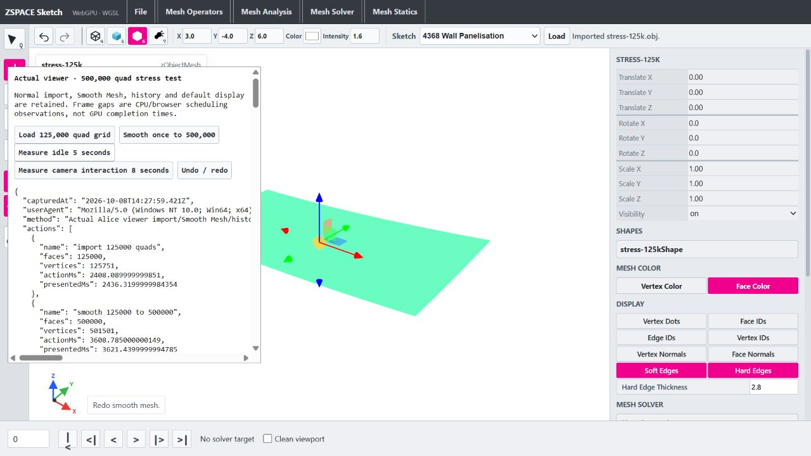

Cold boundary classification optimization
08 October 2026 � viewer-only � public output order preserved
Changes
- Use Uint32 hash slots, Float64 exact packed keys and saturated Uint8 corner-use counts in the cold boundary path. Resolve hash collisions by full key equality and linear probing.
- Keep record insertion order separate from hash slots to preserve ordered boundary/wire output. Repeated, self and nonmanifold corner uses retain the existing rules.
- Keep the original Map path for oversized face lists, more than four million corners or IDs beyond safe numeric packing.
- Separate scratch-array call scope from returned membership closures. The two-state cache remains unchanged and stores only boundary results plus owned topology snapshots.
Node classification medians (ms)
| Quads | Before | After |
|---|
| 125,000 | 108.6 | 33.5 |
| 500,000 | 608.5 | 166.9 |
Browser samples (ms)
| Capture | Cold boundary | Full Smooth action |
|---|
| before | 674.6 | 2769.7 |
| after-first | 310.4 | 2934.8 |
| after | 244.6 | 3608.8 |
Cold boundary improved in the sampled runs. Full Smooth remains variable and blocks the main thread. Child/inclusive phase times must not be added together.
Verification
- Baseline and final npm run build passed; build after scratch-scope extraction passed.
- 209 ordered boundary/membership fixtures, 18 full renderer comparisons passed.
- Existing 62 surface/60 renderer parity cases and cache ownership/invalidation/LRU contracts passed.
- Actual WebGPU viewer: 125k import, 500k Smooth, undo/redo and idle scheduling verified.

Limitations
- Three alternating-order Node trials are isolated classification measurements, not full browser/GPU/history timings.
- Browser captures are individual fresh-load samples, optimized then nearby baseline then final optimized; other phases vary. No stable end-to-end gain or FPS guarantee is established.
- Typed scratch arrays total 34,777,216 bytes for two million corners (500k quads); these are temporary, not a measured peak/total memory reduction. Cache snapshot memory is unchanged.
- Parity comparison uses the retained ignored pre-change helper at wasm/tmp/viewer-boundary-table-before/meshBoundaryEdges.ts.
- Existing bundle-size warning remains. Kernel/ABI, sketches, UI and runtime artifacts were not changed by this milestone. Other ongoing dirty viewer/core changes were preserved.
- The existing reconstruction regression harness rewrote viewer-reconstruction-parity.json when rerun; a milestone-specific copy is saved as viewer-boundary-table-regression.json. Historical results remain in viewer-reconstruction-optimization.json/html.
Next priority
Profile full publication ownership/copies and surface reconstruction before choosing the next bounded optimization; main-thread Smooth pauses remain.
Changed files
- ../zspace_alice_webviewer/src/meshBoundaryEdges.ts
- ../zspace_alice_webviewer/tests/meshBoundaryTable.test.mjs
- ../zspace_alice_webviewer/reports/Alice-Viewer-Implementation-Roadmap.md
- tests/performance/viewer-boundary-table-parity.mjs
- reports/generate-boundary-table-report.py
- reports/viewer-boundary-table-parity.json
- reports/viewer-boundary-table-regression.json
- reports/viewer-reconstruction-parity.json
- reports/viewer-boundary-table-before.json
- reports/viewer-boundary-table-after-first.json
- reports/viewer-boundary-table-after-intermediate.json
- reports/viewer-boundary-table-after.json
- reports/viewer-boundary-table-optimization.json
- reports/viewer-boundary-table-optimization.html
- reports/viewer-boundary-table-500k.png
No commit or push.